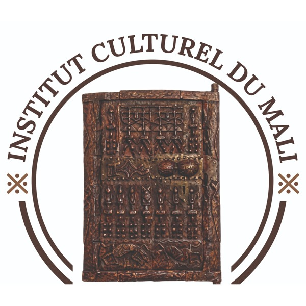
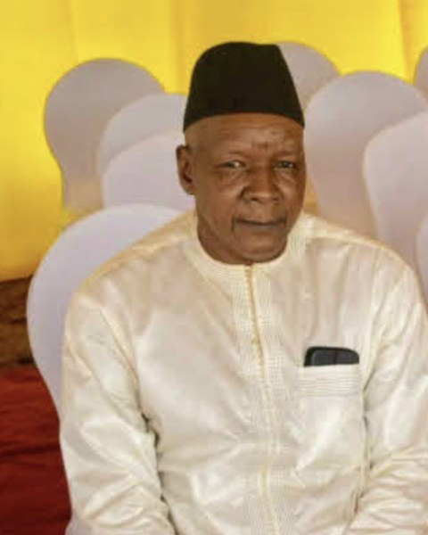
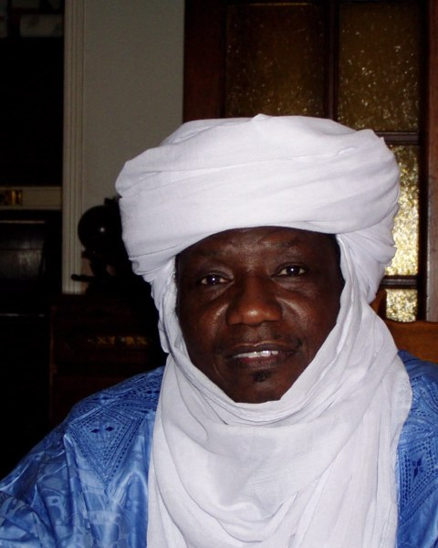
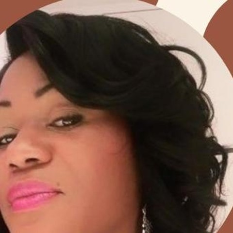

The Steering Committee is the collegial body responsible for the governance, strategic direction, oversight and control of the Institut Culturel du Mali – Lonniya Guèndè. It sets the Institute's overall direction, ensures its programs remain aligned with its mission, and oversees the General Management in accordance with ICM's Statutes and internal regulations.
Composed of eleven members chosen for their professional expertise, institutional experience and knowledge of Africa and its heritage, the Committee meets at least once a year and may form specialized committees covering finance, programs, partnerships and governance.

Originally from the Mandé of Kéla, a center of oral tradition and of the history of the Mali Empire, Mamadou Cherif Haidara is a trained jurist and a retired senior banking executive with nearly thirty years in the sector. His career took him to represent banking institutions in Central Africa and in France, giving him deep international experience of the continent's financial and institutional affairs.
He was among the pioneers of the introduction of multiparty democracy in Mali. An activist, and later a cadre and section leader in Bamako as well as in Central Africa, he is also a member of the Association pour la Défense des Victimes de la Répression (ADVR), which brings together victims of the military repression of January to March 1991.
Alongside his banking and political engagement, he held diplomatic functions in Central Africa and was active in Malian sporting life as a director of Stade Malien, one of the country's historic football clubs. An accomplished footballer in his youth, he played for Mali's national team before pursuing a professional career in France.
Recognized for his philanthropic engagement, Mamadou Cherif Haidara now brings his experience and network to the Institut Culturel du Mali. A passionate advocate of agriculture, travel and history, he brings to the Committee a perspective rooted in Malian tradition and open to international dynamics.

A Malian social anthropologist and researcher, Mohamed Ag Erless holds a PhD in Social Anthropology from the Institut Supérieur de Formation et de Recherche Appliquée (ISFRA) in Bamako and is a graduate of the École des Hautes Études en Sciences Sociales (EHESS) in Marseille.
He has devoted much of his career to the research, documentation and promotion of Mali's cultural heritage, particularly in the fields of languages, oral traditions, the anthropology of nomadic populations and the cultures of northern Mali. He worked at the Institut des Sciences Humaines and directed the Essouk (Tadamakat) Cultural Mission in Kidal.
Author and contributor to several scientific and cultural publications, he also has experience in intangible heritage preservation, community research, intercultural dialogue, conflict prevention and social cohesion.
Within ICM's Steering Committee, he brings his expertise in anthropology, heritage, languages, oral traditions and knowledge transmission, contributing to the scientific and cultural direction of the Institute's programs.

President and founder of the NJEL YI 4236 association, and Facilities Manager at SAP France, Mylène Matama Bondjali combines leadership, professional expertise and cultural transmission. A specialist in classical African humanities, she develops initiatives dedicated to promoting African knowledge and heritage.
Founder of the Njel Yi 4236 association in 2018, she offered her support to Professor Dibombari Mbock in creating the École des Scribes, dedicated to reading hieroglyphs using the KUMA method. Since 2018, the association has supported an average of thirty trainees per semester, organized four conferences a year, and completed four study trips to Egypt.
Through her engagement, she carries a vision grounded in knowledge, transmission and the promotion of cultural heritage. Within ICM's Steering Committee, she brings this expertise in classical African humanities to the Institute's programs.